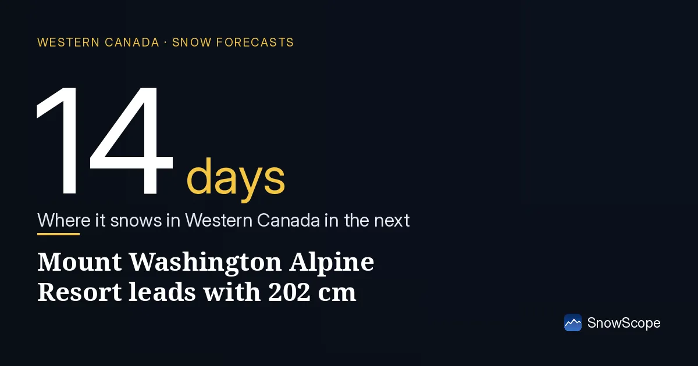

Where it snows in Western Canada in the next 14 days: Mount Washington Alpine Resort leads with 202 cm
Our two-week maps show where new snow should fall in Western Canada between 22 November and 5 December, from the two forecasts that reach two weeks, ECMWF and GFS: we take the middle of the two and always give their range. The most goes to Mount Washington Alpine Resort: about 202 cm on its upper slopes, 109 cm–296 cm depending on the forecast, then Mount Cain Alpine Park with 166 cm. Confidence: good for the trend, lower for any single number.
See the live snow forecast for Mount Washington Alpine Resort in the SnowScope appSnow depth, powder alerts and the 3D map, free.
Resort by resort, the next 14 days
Mount Washington Alpine Resort (Canada): about 202 cm in 14 days (109 cm–296 cm between the Forecasts), 178 cm in the first week and 24 cm in the second. Mark 24 November: that is the biggest day, with 64 cm, out of 8 days at 5 cm or more.
At Mount Cain Alpine Park (Canada) the two weeks add up to about 166 cm (83 cm–249 cm depending on the forecast): 139 cm by the end of the first week, then 27 cm more. Mark 24 November: that is the biggest day, with 48 cm, out of 7 days at 5 cm or more.
Sasquatch (Canada): about 102 cm in 14 days (56 cm–149 cm between the Forecasts), 79 cm in the first week and 23 cm in the second. The snowiest day is 24 November with 22 cm; 7 days bring 5 cm or more.
At Whistler Blackcomb (Canada) the two weeks add up to about 102 cm (65 cm–140 cm depending on the forecast): 91 cm by the end of the first week, then 11 cm more. The snowiest day is 26 November with 29 cm; 5 days bring 5 cm or more.
At Mt Seymour (Canada) the two weeks add up to about 86 cm (45 cm–128 cm depending on the forecast): 68 cm by the end of the first week, then 18 cm more. Mark 24 November: that is the biggest day, with 26 cm, out of 5 days at 5 cm or more.
Ski Callaghan (Canada): about 73 cm in 14 days (45 cm–101 cm between the Forecasts), 61 cm in the first week and 11 cm in the second. The snowiest day is 26 November with 19 cm; 4 days bring 5 cm or more.
| Resort | Snow depth | New snow, 72 h | Coming, next days | Top |
|---|---|---|---|---|
| Mount Washington Alpine Resort | 95 cm | 1 cm | 76 cm | 1,569 m |
| Mount Cain Alpine Park | 93 cm | 0 cm | 57 cm | 1,616 m |
| Sasquatch | 13 cm | 0 cm | 25 cm | 1,316 m |
| Whistler Blackcomb | 150 cm | 0 cm | 33 cm | 2,259 m |
| Mt Seymour | 18 cm | 0 cm | 10 cm | 1,255 m |
| Ski Callaghan | 15 cm | 0 cm | 25 cm | 998 m |

The snow still to come
Up to 76 cm of new snow is forecast at Mount Washington Alpine Resort over the next days.
Forecasts move: the timing is usually more reliable than the totals, so check again two days before you go.
At about 1,325 m, Mount Washington Alpine Resort has 6 cm today; a normal 21 November has 43 cm there.
Only one winter in ten has more than 97 cm on this date.
A week ago the same spot had 4 cm.
In past winters the best snow at Mount Washington Alpine Resort usually came early January / late February.

First week against second week
Add the region up and 65 % of the fortnight's snow is already down by 28 November; what the maps show from 29 November to 5 December is the rest.
Early birds: Mount Washington Alpine Resort, Mount Cain Alpine Park, Sasquatch, Whistler Blackcomb, Mt Seymour and Ski Callaghan see most of their snow before the first week is out.
On the map, about 102,272 km² of mountain terrain get 20 cm or more over the two weeks, and 43,395 km² get 50 cm or more.

New snow by height
The same two weeks by height, over all the mountains of the region (every square kilometre of terrain, not only the resorts): between 1,000 m and 1,500 m: typically 8 cm, the snowiest quarter of that band 15 cm or more; between 1,500 m and 2,000 m: typically 15 cm, the snowiest quarter of that band 23 cm or more; between 2,000 m and 2,500 m: typically 12 cm, the snowiest quarter of that band 22 cm or more; between 2,500 m and 3,000 m: typically 9 cm, the snowiest quarter of that band 16 cm or more; between 3,000 m and 4,500 m: typically 10 cm, the snowiest quarter of that band 15 cm or more.
The days to watch
Snow days across the region, over the 51 resorts in our list: Tuesday 24 November (8 of 51 resorts at 5 cm or more, up to 64 cm at Mount Washington Alpine Resort), Wednesday 25 November (8 of 51 resorts at 5 cm or more, up to 38 cm at Mount Washington Alpine Resort), Thursday 26 November (18 of 51 resorts at 5 cm or more, up to 37 cm at Mount Washington Alpine Resort) and Friday 27 November (6 of 51 resorts at 5 cm or more, up to 9 cm at Sasquatch).
How to read the maps
Three maps: the whole fortnight, then the first and the second week. Colours start at one centimetre of new snow and darken with the amount; the pins give the value on the upper slopes of the resorts in this post.
Beyond a week, a forecast is a tendency, not a promise: the two forecasts often disagree on the second week, which is why every number here comes with its range. The maps are redrawn every morning.
Tips for skiers
- Plan the first week with these maps; keep the second week loose and check again in a few days.
- The 0 °C level is a forecast and can move by several hundred metres, which changes where rain turns to snow: check the map again the day before you go.
- Before any off-piste or touring day, read the official avalanche bulletin (links below).
- Snow on the map does not mean a resort is open: check lifts and dates on the resort's website.
About these numbers
Resort snow depths are the deepest snow on the resort's upper slopes on the date shown; they are estimates for an area, not a measurement at one point. Forecasts can change. Always read the official avalanche bulletin before going off-piste.
Official avalanche bulletins: Avalanche Canada
Cite this report
For research, teaching or the press: the numbers and charts are free to reuse under CC BY 4.0 with this citation.
SnowScope (2026), Where it snows in Western Canada in the next 14 days: Mount Washington Alpine Resort leads with 202 cm, https://snowscope.app/blog/en/2026/11/western-canada-2-week-snow-forecast-maps-21-november-2026.html, accessed 2026-11-21
SnowScope (Atlas Labs). (2026, November 21). Where it snows in Western Canada in the next 14 days: Mount Washington Alpine Resort leads with 202 cm. SnowScope snow reports. https://snowscope.app/blog/en/2026/11/western-canada-2-week-snow-forecast-maps-21-november-2026.html
BibTeX
@misc{snowscope2026westerncanada2weeksnowfo,
author = {{SnowScope (Atlas Labs)}},
title = {Where it snows in Western Canada in the next 14 days: Mount Washington Alpine Resort leads with 202 cm},
year = {2026},
month = nov,
howpublished = {\url{https://snowscope.app/blog/en/2026/11/western-canada-2-week-snow-forecast-maps-21-november-2026.html}},
note = {Published 2026-11-22 10:03 UTC; accessed 2026-11-21}
}· CC BY 4.0 · Methods, data and tools →
Mount Washington Alpine Resort: snow and temperature by height, this winter vs last (tools) →
Follow Mount Washington Alpine Resort
Free: a message when fresh snow is coming, and the forecast every morning.
More snow reports

Whistler Blackcomb saw 76 cm of new snow in the last 72 hours, with Mount Cain Alpine Park also receiving 64 cm, as of November 16, 2026.

The early-winter snowpack in Western Canada is building unevenly, and height makes all the difference.

Whistler Blackcomb has the most snow in Western Canada this weekend with 136 cm on upper slopes. Early-season cover is thin at mid-elevations across the region, measured 2026-11-19.